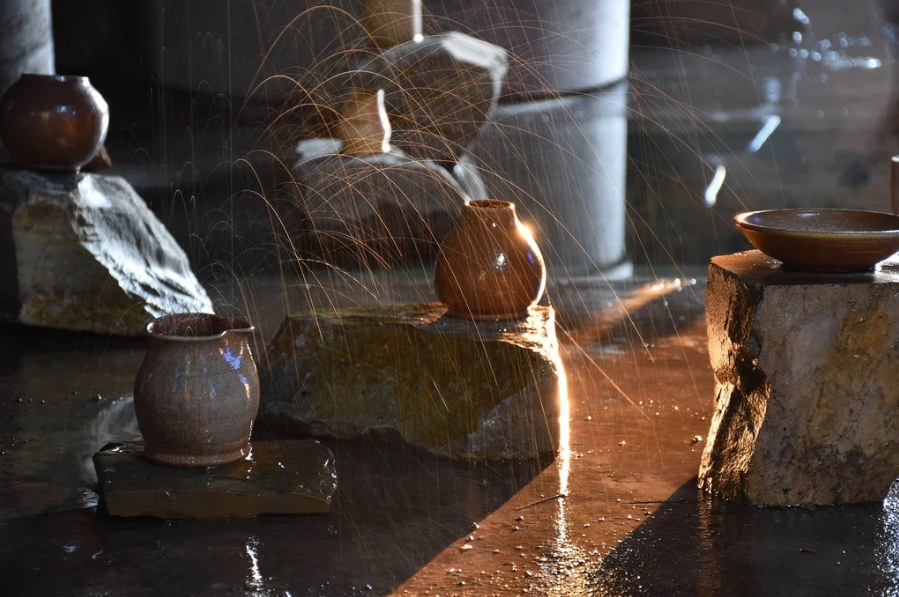

Mary Mattingly, “Limnal Lacrimosa,” 2021–2022
Immersive installation with glacial snowmelt, ceramic vessels, clear tubing, holding tanks, and sound. Kalispell, Montana.
I chose Limnal Lacrimosa to open the exhibition because it turns the melting of Glacier National Park into something a visitor can hear and feel. Snowmelt drips from tubing near the ceiling into ceramic vessels shaped like lachrymatories, the small bottles once said to hold mourners’ tears, so the room becomes a place of grief as much as a place of science. I am moved by the way the drips sped up and slowed down with the outdoor temperature, which means the artwork kept a record of the climate in real time over nine months. This piece sets up the first stage of my narrative, water leaving its source. Glaciers act as slow reservoirs that feed rivers through dry summers, and as they shrink, every community downstream inherits the loss. Mattingly’s title joins an old word for lakes with a word for tears, and that pairing gives the whole exhibition its emotional key. I wanted visitors to have a moment to reflect on the movement and sound of water, what it means to be surrounded by it, and eventually to imagine its absence.